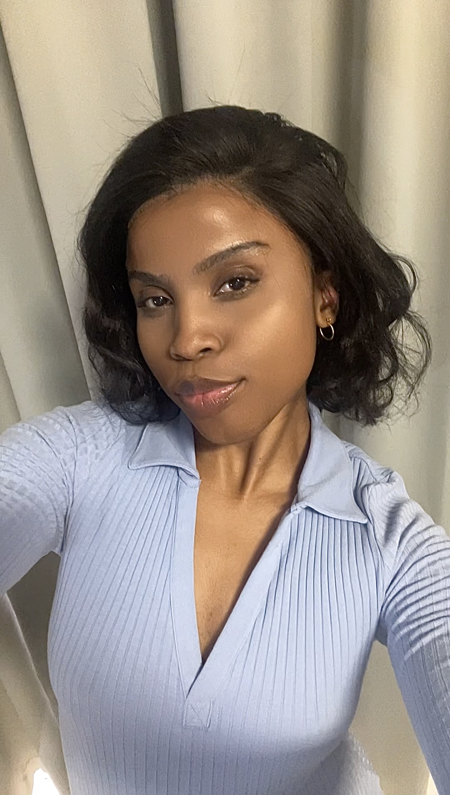

Ayabonga Msila

Summary
Highly motivated and detailed orientated clinician with a unique blend of healthcare experience and web development skills.
Seeking to leverage my certification in Web development to secure a challengeing role as a web developer ,where i can apply my technical expertise and passion for innovation to drive success
Education
- 2025: Full Stack Web Development, Udemy
- 2018 - 2021: Bachelor in Medical Clinical Practice,Walter Sisulu University
Work Experience
Clinical associate
-
2022 - Present: Clinical Associate, Health With Heart Practive
- Assisted in the diagnosis and treatment of patients under the supervision of a medical doctor.
- Conducted physical examinations and ordered diagnostic tests.
- Provided patient education and counseling on health-related issues.
Skills
- Clinical experience and understanding of healthcare workflow
- Strong-problem solving
- Strong communication and Teamwork abilities
Others
Hobbies
Contact Me